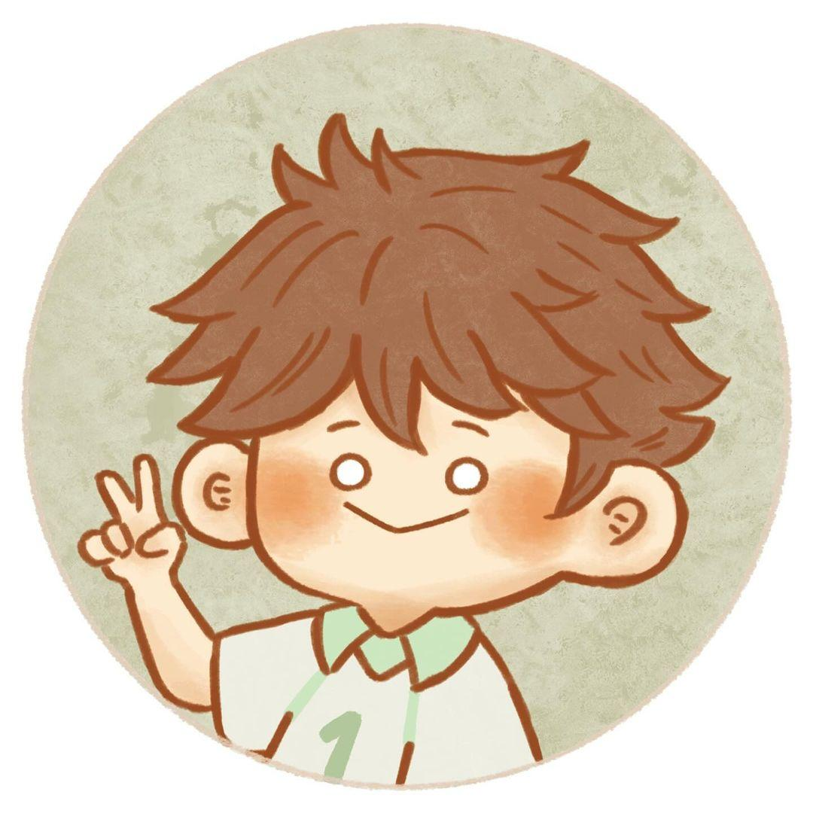

🌱 關於我

嗨，我是王怡婷。如果把我的腦袋當作一間電影製片廠，那資訊科學就是我的首席工程師，負責確保互動機制的完美運行；而多媒體則是我的藝術總監，負責視覺衝擊和情感渲染。我，就是那個站在中央、手拿劇本的跨界導演，目標是導出一齣理性與感性兼具的好故事！
嗨，我是王怡婷。如果把我的腦袋當作一間電影製片廠，那資訊科學就是我的首席工程師，負責確保互動機制的完美運行；而多媒體則是我的藝術總監，負責視覺衝擊和情感渲染。我，就是那個站在中央、手拿劇本的跨界導演，目標是導出一齣理性與感性兼具的好故事！
Figma (原型設計、使用者流程), Adobe XD (線框圖), Storyboarding, Usability Testing
Adobe Premiere Pro (影片剪輯), Adobe Photoshop (圖像處理), Lightroom (照片調色), FL Studio (音樂製作)
HTML5, CSS3/SCSS, JavaScript (ES6+), RWD 響應式設計
手繪手書：如果有一天我變得很有錢 (2025)
AI生成影片_小毛球。
操控小精靈在方格世界中收集愛心寶石，同時閃避隨機移動的骷髏敵人，挑戰最高分！
Email: s111316015@stu.ntue.edu.tw
Instagram: yi_ting0318